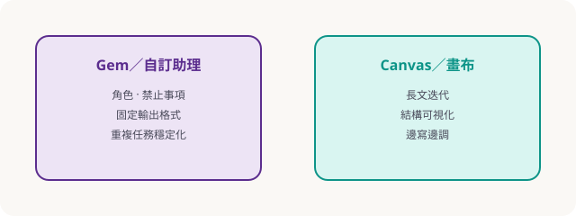

Part 06 · Canvas／Gem／深度應用
客製助理與畫布式工作流
當重複任務變多，就把「角色＋規則＋輸出格式」固化成 Gem（或同等自訂助理），並用 Canvas／畫布類介面迭代長文與結構化產出。
何時該做自訂助理？
- 每週重複：週報、教案暖身、錯題講解口吻固定。
- 需要嚴格格式：JSON、表格欄位、評分規準。
- 要限制行為：不准編造數據、必須提問澄清、只能用繁中。

設計一張「助理規格卡」
- 名稱與情境：例「科普短課暖身助理」。
- 允許／禁止：允許改寫學員草稿；禁止捏造實驗數據。
- 輸入：學員程度、時長、主題關鍵詞。
- 輸出：3 題勾題＋1 個示範比喻＋風險提醒。
- 驗收：老師抽一題人工改到可上台。
Deep Research／長任務小技巧
把大題拆成：問題定義 → 資料來源清單 → 對照表 → 結論與不確定性。每一段都要求「我還缺什麼資訊」以避免一次幻覺到底。
隨堂測驗 · C4Q1
建立 Gem／自訂助理最主要的價值是？
隨堂測驗 · C4Q2
助理規格卡裡「禁止事項」的作用？
隨堂測驗 · C4Q3
長研究任務較佳策略是？